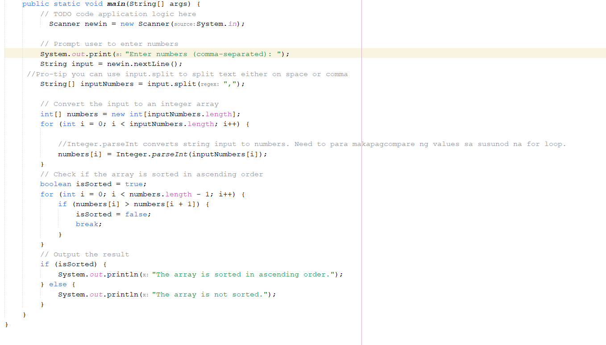
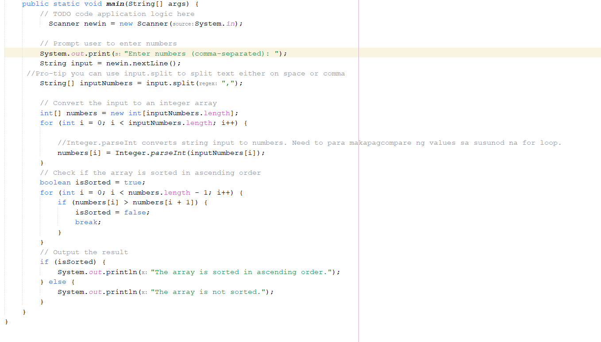

Hi Welcome to MY PORTFOLIO!🌻
23 y/o | Information Technology Student | Aspiring Graphic Designer
About Me
Hi! I'm Shane Ashley Dela Cruz, a 23-year-old Information Technology (IT) student from Cavite State University – CCAT Campus and an aspiring designer. I'm passionate about technology, creativity, and continuous learning. I enjoy exploring new tools, developing websites, and creating visually appealing, user-friendly designs. Whether it’s coding, designing, or solving problems, I always give my best and strive to grow with every experience. I’m a proud member of the Iglesia Ni Cristo, where I serve as a choir member and a youth worship service teacher. My faith plays a big part in who I am—it teaches me discipline, dedication, and the importance of using my talents to inspire others and give glory to God. I love cats—they remind me to be curious and calm, and they're always part of the little joys that brighten my day. I also enjoy capturing the beauty of sunsets and nature through photography. The calming skies and natural landscapes often fuel my creative ideas and remind me to pause and appreciate life’s quiet moments. Beyond tech and design, I have a love for fashion—especially dresses! I believe that the way we present ourselves is an extension of our creativity and confidence. Wearing something I love brings me joy and adds a personal touch to my day. Fun fact: my favorite color is blue—calm, cool, and inspiring, just like the kind of work I aim to create. This website is a reflection of my journey, my values, and the projects I’m proud to share. Through every click and scroll, I hope you discover not just my skills, but also the heart behind everything I do.This website is a reflection of my journey, skills, and the projects I’m proud to share. Thank you for visiting!
Contact Me
You can reach me through my social media:
Welcome to My Gallery
Services
- Web Design & Development
- UI/UX Design
- Basic Photo & Video Editing
- IT Support & Troubleshooting
My Portfolio
 
